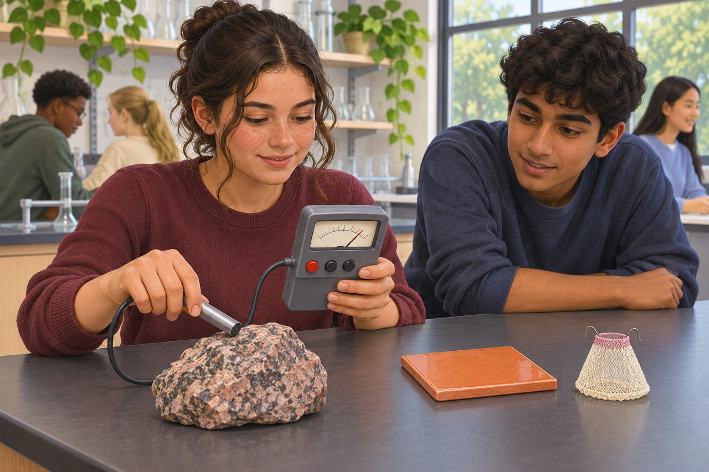
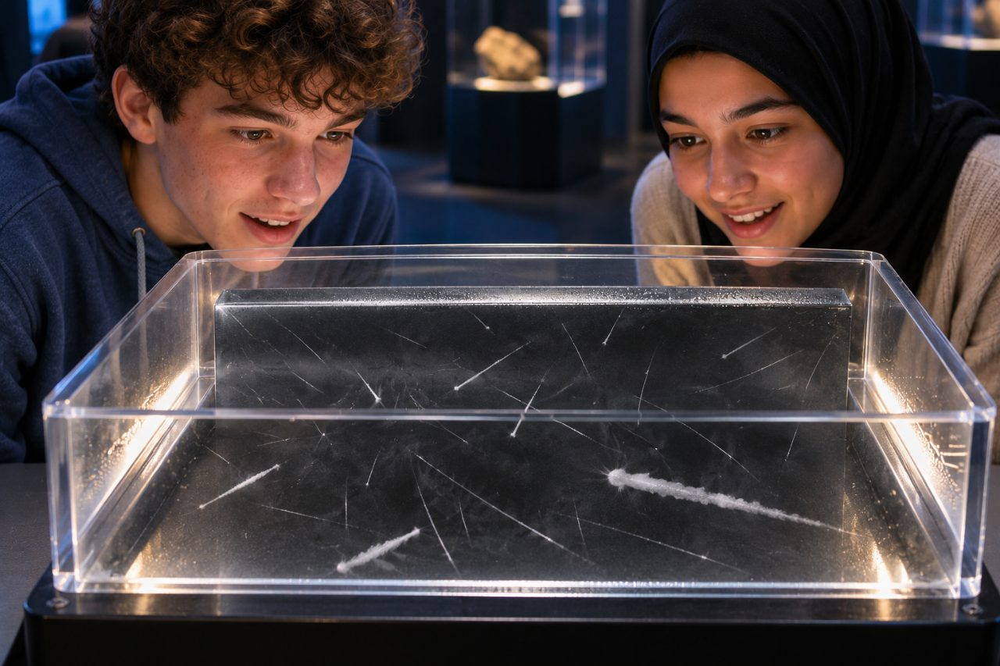

Strahlung überall

Denk mal nach: Neben dem Stein liegen noch eine Kachel und ein Glühstrumpf. Warum hat Mia wohl genau diese Dinge mitgebracht?
Mia hält im NT-Raum ein Messgerät an einen Granitstein. Es knackt – leise, aber ständig. Sie nimmt das Gerät vom Stein weg. Es knackt weiter. Woher kommt das?
Überall um uns herum gibt es – an jedem Ort, zu jeder Zeit, auch gerade jetzt. Man nennt sie . Wir können sie nicht sehen, hören, riechen oder fühlen. Nur Messgeräte zeigen sie an.
Woher kommt die Strahlung? Die natürliche Strahlung hat drei Quellen – von unten, von oben und aus dir selbst. Dazu kommt Strahlung, die der Mensch erzeugt.
Bodenstrahlung
Aus Böden und Gesteinen, in denen radioaktive Stoffe stecken. Besonders hoch dort, wo liegt: Bayerischer Wald, Schwarzwald, Erzgebirge.
Höhenstrahlung
Aus dem Weltraum. Die schwächt sie stark ab. Je höher du bist, desto stärker ist sie – auf der Zugspitze oder im Flugzeug.
Eigenstrahlung
Aus deinem eigenen Körper. Winzige Mengen radioaktiver Stoffe nimmst du mit Nahrung, Wasser und Atemluft auf.
Künstliche Radioaktivität
Strahlung, die der Mensch erzeugt: in und in der Medizin, zum Beispiel beim oder bei der Strahlentherapie gegen Krebs. Dabei achtet man genau auf die nötige Strahlenmenge.
Wo strahlt der Boden stärker?
Die Karte zeigt die natürliche Strahlung aus dem Boden. Tippe auf die Zahlen und finde heraus, warum sie nicht überall gleich stark ist.
MERKE
- Überall gibt es radioaktive Strahlung. Wir können sie mit unseren Sinnen nicht wahrnehmen.
- Natürliche Strahlung: Bodenstrahlung (aus Gestein und Boden), Höhenstrahlung (aus dem Weltraum), Eigenstrahlung (aus dem eigenen Körper).
- Künstliche Radioaktivität erzeugt der Mensch – vor allem in Kernkraftwerken und in der Medizin.
Welche Quelle ist das?
Tippe eine Karte an und dann die passende Quelle.
Erkläre in eigenen Worten ✨ KI prüft
Schreibe ganze Sätze oder Stichpunkte. Die KI achtet nur auf den Inhalt, nicht auf die Rechtschreibung.
Die Entdeckung
Paris, 1896. Der Physiker Henri Becquerel untersucht Stoffe, die nach einem Sonnenbad im Dunkeln nachleuchten. Darunter ist ein Stück .
Seine Frage: Geht dieses Nachleuchten durch Papier? Dafür wickelt er eine in schwarzes Papier und legt das Uranerz darauf. Die Sonne soll das Erz zum Leuchten bringen.
Ein Zufall hilft. Tagelang ist es wolkig. Becquerel legt das Päckchen in eine dunkle Schublade – ganz ohne Sonne.
Als er die Platte trotzdem , ist sie genau dort geschwärzt, wo das Erz lag. Uran sendet also von selbst eine unsichtbare Strahlung aus, die durch Papier geht – ganz ohne Licht. Becquerel hat die radioaktive Strahlung entdeckt.
Marie und Pierre Curie
Marie Curie (1867–1934) und ihr Mann Pierre Curie (1859–1906) untersuchten uranhaltige Gesteine weiter. Sie fanden darin ein Element, das noch viel stärker strahlt als Uran, und nannten es – „das Strahlende“. Von Marie Curie stammt auch das Wort Radioaktivität.
1903 bekamen die Curies zusammen mit Becquerel den für Physik. 1911 erhielt Marie Curie einen zweiten Nobelpreis, diesmal für Chemie. Damals wusste niemand, wie gefährlich die Strahlung ist. Marie Curie arbeitete jahrzehntelang ungeschützt damit. Sie starb 1934 an einer schweren Krankheit des Blutes – sehr wahrscheinlich eine Folge der Strahlung. Ihre Tochter Irène bekam 1935 ebenfalls einen Nobelpreis für Chemie.
MERKE
- Henri Becquerel entdeckte 1896 die radioaktive Strahlung – durch Zufall.
- Uranerz schwärzte eine lichtdicht verpackte Fotoplatte: Uran sendet von selbst eine unsichtbare Strahlung aus, die durch Papier geht.
Becquerels Versuch
Bringe die Schritte mit den Pfeilen in die richtige Reihenfolge.
Die Entdeckung
Tippe zuerst auf eine Lücke, dann auf das passende Wort oder die passende Zahl. Zwei bleiben übrig.
Nachweis: Fotoplatte, Nebelkammer, Geiger-Müller-Zähler
Kein Sinnesorgan bemerkt radioaktive Strahlung. Um sie , braucht man Geräte. Drei davon lernst du kennen.
Fotoplatte oder Fotopapier
Lichtdicht verpackt, radioaktiven Gegenstand darauflegen. Die Strahlung geht durch die Hülle und schwärzt die Platte. Zeigt: Hier ist Strahlung.
Nebelkammer
Luftdichte Kammer voller Alkoholdampf. Jedes Strahlungsteilchen hinterlässt eine Nebelspur – wie ein Kondensstreifen am Himmel. Zeigt: wie viel Strahlung in welche Richtung fliegt. Mit Magnet zeigt sie: Es gibt verschiedene Arten.
Geiger-Müller-Zähler
Ein Zählrohr mit Gas. Jedes Teilchen löst einen kurzen Stromstoß aus – einen . Jeder Impuls gibt ein Klicken (Knacken). Zeigt: genau, wie viel Strahlung ankommt.

Denk mal nach: In manchen Museen steht eine echte Nebelkammer. Woher kommen die Spuren, obwohl niemand eine Probe hineingelegt hat?
Schau zuerst in die Kammer ohne Probe. Lege dann die Probe hinein und schalte danach den Magneten ein.
So funktioniert der Geiger-Müller-Zähler
Hans Geiger und Walther Müller haben dieses Messgerät erfunden – deshalb trägt es ihre Namen. Sein Herz ist das : ein luftdicht verschlossenes Rohr mit Gas. Zwischen Rohr und Draht liegt eine elektrische Spannung.
- Ein Strahlungsteilchen kommt durch das sehr dünne Fenster ins Rohr.
- Im Gas entsteht ein kurzer . Man nennt ihn Impuls.
- Der Zähler zählt jeden Impuls mit.
- Im Lautsprecher ist jeder Impuls als Klicken (Knacken) zu hören.
MERKE
- Radioaktive Strahlung weist man mit Geräten nach: Fotoplatte oder Fotopapier (wird geschwärzt), Nebelkammer (Nebelspuren) und Geiger-Müller-Zähler.
- Die Nebelkammer zeigt, wie viel Strahlung in welche Richtung fliegt. Mit Magnet: gerade und gekrümmte Spuren – es gibt verschiedene Strahlungsarten.
- Im Geiger-Müller-Zähler löst jedes Strahlungsteilchen einen kurzen Stromstoß aus – einen Impuls. Jeder Impuls gibt ein Klicken (Knacken). Er misst genau, wie viel Strahlung ankommt.
Welches Gerät zeigt was?
Tippe links ein Gerät an und dann rechts, was es zeigt.
Zählrate und Nullrate
Zählrate. Man hält das Zählrohr eine Minute lang vor eine Probe und zählt die Impulse. Diese Zahl heißt : Impulse pro Minute.
Je stärker eine Probe strahlt, desto höher ist die Zählrate. Ein alter aus einer Campinglampe oder eine Vase aus bringen es auf etwa 30 bis 500 Impulse pro Minute. Andere radioaktive Stoffe auf bis zu 100 000.
Nullrate. Nimm die Probe weg – und der Zähler knackt trotzdem weiter: etwa 20-mal pro Minute. Das ist die . Sie kommt von der Umgebungsstrahlung aus Boden, Luft und Weltraum.
Willst du wissen, wie viel Strahlung von der Probe selbst kommt, musst du die Nullrate abziehen: Zählrate − Nullrate = Strahlung der Probe.
Wähle eine Probe. Der Zähler misst dann eine Minute lang – im Zeitraffer in fünf Sekunden. Miss alle vier, dann ist die Tabelle voll.
| Probe | Zählrate (Impulse in 1 Minute) | Zählrate − Nullrate = Strahlung der Probe |
|---|---|---|
| keine Probe | ||
| Glühstrumpf | ||
| Uranglas | ||
| Uranerz |
MERKE
- Zählrate = Anzahl der Impulse (Stromstöße) in einer Minute.
- Nullrate = Zählrate ohne Probe, etwa 20 pro Minute. Sie kommt von der natürlichen Umgebungsstrahlung.
- Bei Messungen zieht man die Nullrate ab: Zählrate − Nullrate = Strahlung der Probe.
Nullrate abziehen
Tippe zuerst auf eine Lücke, dann auf das passende Wort oder die passende Zahl. Zwei bleiben übrig.
Messen mit dem Zähler
Erkläre in eigenen Worten ✨ KI prüft
Schreibe ganze Sätze oder Stichpunkte. Die KI achtet nur auf den Inhalt, nicht auf die Rechtschreibung.
Training
Löse das Kreuzworträtsel
Tippe in ein Kästchen und schreibe. Tippst du ein Kästchen zweimal an, wechselt die Richtung. Ä schreibst du als AE. Hängst du fest? Bei jeder Frage hilft 💡 Tipp – erst ein Hinweis, dann der Anfangsbuchstabe. Mit 📋 Wörter zeigen siehst du alle Lösungswörter.
Kreuze an
Profi-Check, Lernkarten und Regelheft
Radioaktivität: überall – und wie man sie nachweist
Überall gibt es radioaktive Strahlung (Umgebungsstrahlung). Wir können sie nicht sehen, hören, riechen oder fühlen.
Natürliche Strahlung: Bodenstrahlung (aus Böden und Gesteinen, z. B. Bayerischer Wald) · Höhenstrahlung (aus dem Weltraum, in den Bergen stärker) · Eigenstrahlung (aus dem eigenen Körper, durch Nahrung, Wasser und Atemluft)
Künstliche Radioaktivität: vom Menschen erzeugt – in Kernkraftwerken und in der Medizin (Röntgen, Strahlentherapie).
Entdeckung: Henri Becquerel, 1896. Uranerz schwärzte eine lichtdicht verpackte Fotoplatte → Uran sendet von selbst eine unsichtbare Strahlung aus.
| Nachweisgerät | Das zeigt es |
|---|---|
| Fotoplatte / Fotopapier | wird dort schwarz, wo Strahlung auftrifft |
| Nebelkammer | Nebelspuren: wie viel Strahlung, in welche Richtung; mit Magnet: verschiedene Arten |
| Geiger-Müller-Zähler | jedes Teilchen → kurzer Stromstoß im Zählrohr = Impuls → Klicken (Knacken); misst genau, wie viel Strahlung ankommt |
Zählrate = Impulse in einer Minute. Nullrate = Zählrate ohne Probe, etwa 20 (Umgebungsstrahlung) → abziehen: Zählrate − Nullrate = Strahlung der Probe.
Extra: Marie und Pierre Curie entdeckten das stark strahlende Element Radium. Marie Curie prägte das Wort „Radioaktivität“ (Nobelpreise 1903 und 1911).
Wortspeicher
Alle Fachbegriffe dieses Moduls auf einen Blick.
Wie geht es weiter?
In der Nebelkammer hast du gesehen: Manche Spuren bleiben gerade, andere werden gekrümmt. Es gibt also verschiedene Arten von Strahlung. In Modul 2 lernst du Alpha-, Beta- und Gammastrahlung kennen.